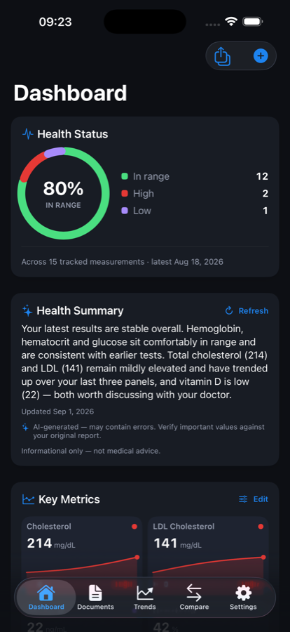
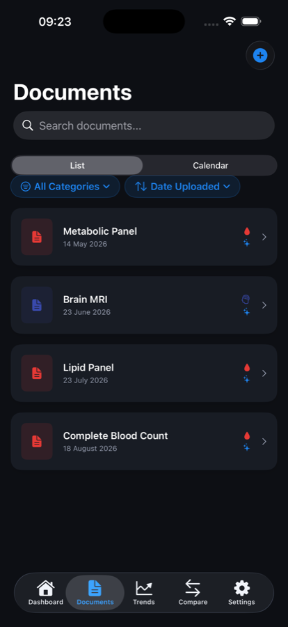
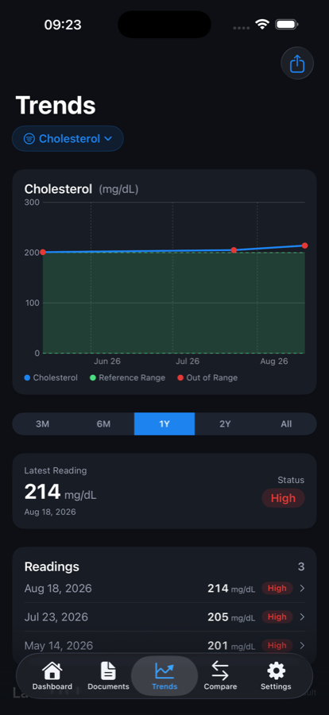
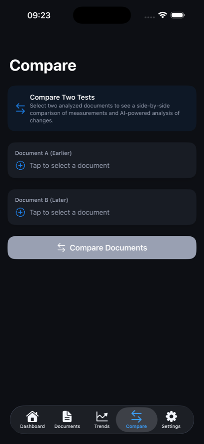
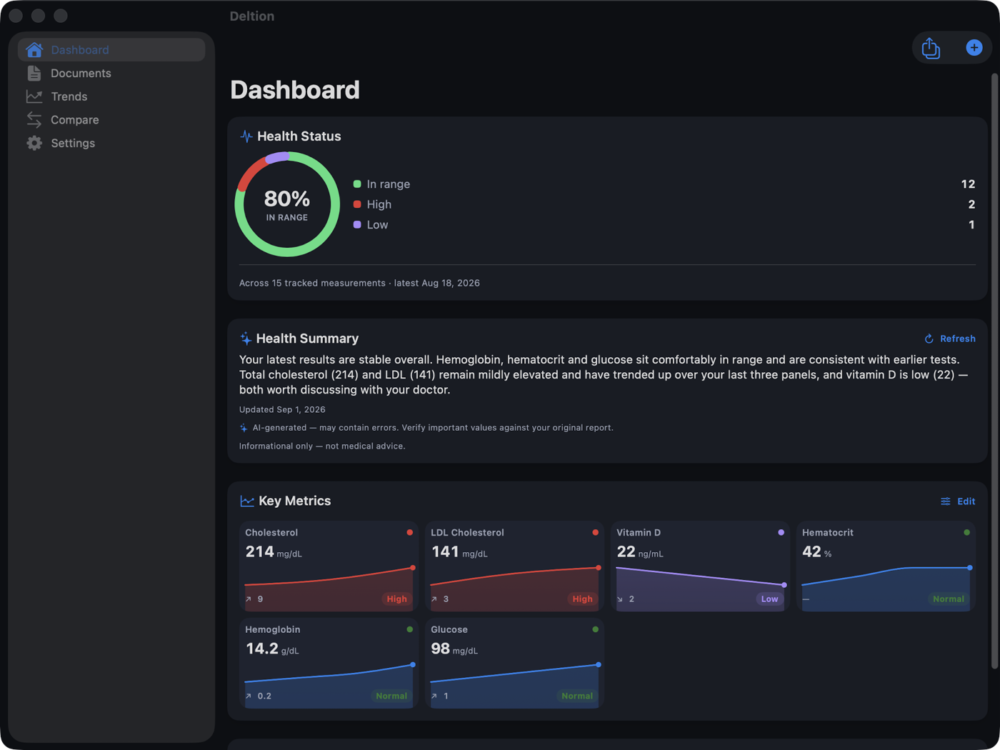

What it does
Point it at a PDF or a photo of a report. Deltion pulls out the measurements, explains them in plain language, and keeps them in order — so “your ferritin is 18” stops being a number on a page and becomes a line you can watch over three years.




Built for people who keep everything
The library is free
Unlimited documents, no cap and no subscription to store them. Nothing pushes you to throw away last year’s bloods to make room.
Analysis on your device
By default Deltion reads your documents using Apple’s on-device model. Nothing is uploaded, and there is nothing to pay. A cloud model is available if you add your own API key — your choice, not the default.
Trends and reference ranges
Measurements are charted over time against typical adult ranges. Where a report states its own range, that one wins — and the app says which is which.
Compare two visits Pro
Put two reports side by side and see what moved, by how much, and in which direction.
Everyone in the family
Separate profiles for the people whose records you keep. Deleting a profile never deletes their documents — they move, they don’t disappear.
Scans you can carry Pro
Import a DICOM study and keep a readable preview of the series with you. It is a way to carry and read your scans — not a radiology workstation: no windowing, no measurement tools.
Reports for your doctor Pro
Export a clean PDF summary of a period, a category, or a set of measurements, to hand over at an appointment.
Sync across your devices Pro
Through your own iCloud account, in a private database only your devices can read. Off unless you turn it on.
Apple Health, both ways
Pull in the readings Health already holds, and send measurements Deltion extracts back to it, with per-type permission. Free.
Import from your provider Pro
Clinical records from the Health app, or a FHIR export from a patient portal — lab values land as documents, one per visit day, so trends and comparison still work.
On a bigger screen

iPad and Mac get the two-column layout, so a document stays open beside the library. Importing a whole DICOM study is iPad and Mac only — a phone is not the place to hand over a two-gigabyte folder.
Eight languages, and legible at any text size
Deltion is available in English, Spanish, French, German, Japanese, Italian, Brazilian Portuguese and Greek. Clinical vocabulary — biomarker names, units, and whether a value is in range — deliberately stays in English, because that is how it appears on the reports you are reading, and a summary that disagreed with the tile beside it would be worse than one that didn’t translate at all.
The interface holds together at the largest accessibility text sizes rather than clipping, and every control is labelled for VoiceOver.
Privacy, stated plainly
- There is no account and no server of ours. Not “your data is safe on our servers” — there are no servers. Nothing to breach, nothing to subpoena, nothing for us to look at.
- We never collect or store your medical data. No analytics, no tracking, no advertising, nothing sold or shared. There is no mechanism by which your library could reach us.
- Your documents are encrypted on the device with AES-256-GCM and iOS file protection, so they are unreadable while the device is locked. Keys live in the Keychain.
- Analysis runs on your device by default, on Apple’s on-device model. In that mode nothing leaves at all.
- iCloud sync uses your own iCloud account, in a private CloudKit database that only your signed-in devices can read — there is no developer view of it. Document files are sealed with your key before they leave the device; the details read out of them sync as private records in your account. The privacy statement is precise about which is which.
Three things can leave your device, and you start all three: cloud AI analysis, if you choose to add your own provider key — then that document’s text goes straight from your device to that provider, under your account with them; iCloud sync, if you switch it on; and a bug report, if you send one. Use none of them and nothing ever leaves. The full privacy statement spells each out.